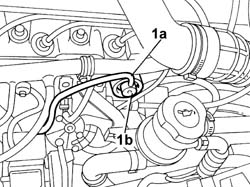

1044C10 FUEL PRESSURE REGULATOR - R + R
- Path
- Procedures > 10 ENGINE UNIT > 1044 FUEL CIRCUIT PUMP/S AND DEVICES > 1044C FUEL PRESSURE CONTROL DEVICES > 1044C10 FUEL PRESSURE REGULATOR - R + R
- Kind
- repair procedure (removal / refitting; the operation number is the code)
- Applies to
- engines: 2.0 16V; all production periods
- Interactive page
- https://sloeber94.github.io/elrnDB-fDct/en/#/244000775
Applies to: engines: 2.0 16V; all production periods
 Removing
Removing
 Refitting
Refitting1. Release the small pipe (1a) and extract the fuel pressure regulator (1b) which is a press fit after having released the fastening spring.

Applies to: engines: 2.0 16V; all production periods
Refitting
Removing- Press fit the fuel pressure regulator and insert the small pipe.
- Fit the spring removed previously.
- Fit the small pipe.